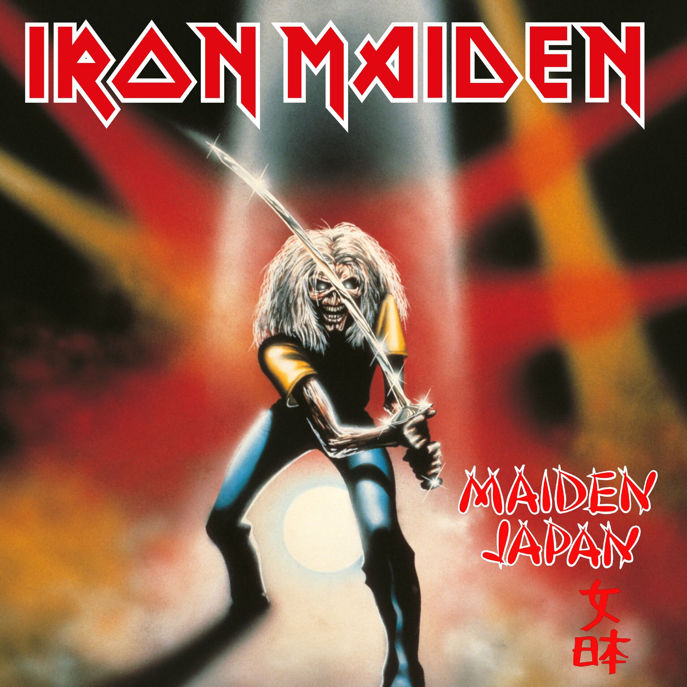

Iron
Maiden
IronWord
Inicio
Biografia
Banda
Integrantes
Discografia
Estudio
En vivo
Letras
Tienda

"Live!! + One", también conocido como "Live in Japan", es un EP en vivo de Iron Maiden lanzado originalmente en Japón el 25 de diciembre de 1980. Este material captura la intensidad de la banda durante sus primeros días y se ha convertido en un lanzamiento especial para coleccionistas y fanáticos de la banda. Contexto del álbum: En 1980, Iron Maiden estaba comenzando a ganar notoriedad en la escena del heavy metal tras el lanzamiento de su álbum debut, "Iron Maiden". La banda emprendió una serie de giras para promover el disco, incluyendo fechas en Japón, donde fueron muy bien recibidos. Este EP en vivo fue grabado durante esa época, mostrando la potencia de la formación original liderada por Paul Di'Anno en las voces. La intención del EP era ofrecer algo exclusivo para el mercado japonés y, al mismo tiempo, captar la energía en vivo de la banda en sus primeros días. Detalles de la grabación: Fecha de grabación: 1980. Lugar: Kosei Nenkin Hall, Nagoya, Japón (aunque no se especifica en los créditos oficiales, el material proviene de la gira japonesa de ese año). Productor: Iron Maiden y Doug Hall. El EP incluye tres canciones grabadas en vivo más un bonus track de estudio en su versión original. Lista de canciones: "Sanctuary" (En vivo): Una de las canciones más energéticas del álbum debut, donde se destaca la interacción del público japonés con la banda. "Phantom of the Opera" (En vivo): Una interpretación épica de una de las composiciones más complejas de la banda hasta ese momento. "Drifter" (En vivo): Un tema menos conocido, pero que en vivo gana una gran fuerza gracias a la actitud de Di'Anno. "Women in Uniform" (Bonus track de estudio): Un cover de Skyhooks, que fue grabado en las mismas sesiones de su álbum debut. Recepción: Aunque no tuvo una amplia distribución fuera de Japón, el EP fue bien recibido por los fanáticos locales y ayudó a consolidar la reputación de Iron Maiden como una banda capaz de ofrecer un espectáculo enérgico y lleno de calidad técnica. Más tarde, el material sería reeditado en varios formatos y recopilaciones, como en "The First Ten Years". Legado: "Live!! + One" es un testimonio de los primeros años de Iron Maiden, antes de la llegada de Bruce Dickinson y su consolidación como una banda global. A pesar de su duración corta, es una muestra valiosa de cómo el grupo ya dominaba el escenario y conectaba con sus fanáticos. Es especialmente importante para los seguidores de la era de Paul Di'Anno, quien aportaba una energía cruda y punk que definió los inicios de la banda. Este EP sigue siendo una pieza de colección muy buscada por fanáticos que desean explorar los orígenes de una de las bandas más grandes del heavy metal.
X
"Live After Death" es el primer álbum en vivo oficial de Iron Maiden, lanzado el 14 de octubre de 1985. Este disco en vivo captura la intensidad y la energía de la banda durante una de sus giras más icónicas, la "World Slavery Tour" (1984-1985), la cual apoyaba su exitoso álbum de estudio "Powerslave" (1984). Es considerado uno de los mejores álbumes en vivo de la historia del heavy metal, inmortalizando el apogeo de la banda en los años 80. Contexto histórico: A mediados de los 80, Iron Maiden ya era una de las bandas más importantes del heavy metal a nivel mundial. Tras el lanzamiento de "Powerslave", la banda se embarcó en la ambiciosa "World Slavery Tour", que se extendió por casi un año, con más de 180 conciertos alrededor del mundo. Esta gira fue masiva no solo en duración, sino también en producción, incluyendo una escenografía faraónica inspirada en la temática egipcia de "Powerslave", con espectáculos visuales que involucraban grandes estructuras y la icónica figura de Eddie, la mascota de la banda. El momento era ideal para capturar la experiencia de un show de Iron Maiden en su máximo esplendor, y "Live After Death" fue la representación perfecta de esa era gloriosa. Grabación y producción: El álbum "Live After Death" fue grabado en dos lugares principales: Long Beach Arena, California, en marzo de 1985, donde se registraron cuatro noches consecutivas de conciertos. Hammersmith Odeon, Londres, en octubre de 1984. La mayoría de las pistas que aparecen en el álbum fueron grabadas en el Long Beach Arena, un lugar legendario para las grabaciones en vivo, debido a su acústica y capacidad de generar una atmósfera electrizante. El productor Martin Birch, quien ya había trabajado con la banda en sus álbumes anteriores, fue responsable de la producción, asegurándose de que la energía en vivo de la banda fuera capturada con precisión. Formato del álbum: "Live After Death" fue lanzado originalmente como un álbum doble en vinilo, pero también en formato de casete y CD. El álbum incluía un extenso folleto con fotos de la gira, notas de la banda y una descripción de la agotadora "World Slavery Tour". Temática y estructura: El álbum contiene una selección de las mejores canciones de Iron Maiden hasta ese momento, muchas de las cuales ya se habían convertido en clásicos. Además de la increíble energía en vivo, lo que hace especial a "Live After Death" es la representación del carácter épico y técnico de Iron Maiden sobre el escenario, mostrando su capacidad para combinar poder, precisión y teatralidad. Canciones destacadas: "Aces High": La pista de apertura es una de las canciones más emblemáticas de la banda, basada en la Batalla de Inglaterra durante la Segunda Guerra Mundial. La interpretación en vivo es enérgica, y Bruce Dickinson inicia el show con su distintivo grito, marcando el tono de lo que está por venir. "2 Minutes to Midnight": Esta canción, un clásico del álbum "Powerslave", es una de las favoritas de los fanáticos. La interpretación en vivo captura la energía política de la canción, que trata sobre la amenaza nuclear. "The Trooper": Una de las canciones más famosas de Iron Maiden, basada en la carga de la Brigada Ligera en la Batalla de Balaclava. En el escenario, Bruce Dickinson ondea la bandera británica mientras canta, un gesto que se ha convertido en una tradición en los shows en vivo de la banda. "Revelations": Una canción más lenta y melódica en comparación con las otras pistas, que ofrece una atmósfera oscura y profunda. La interpretación en vivo destaca la destreza técnica de los guitarristas Dave Murray y Adrian Smith. "Flight of Icarus": Basada en la leyenda griega de Ícaro, la versión en vivo mantiene su energía intensa, con un coro que invita a la participación del público. "Rime of the Ancient Mariner": La interpretación de esta épica canción de casi 14 minutos, basada en el poema de Samuel Taylor Coleridge, es uno de los momentos más destacados del álbum. La banda reproduce la historia de un marinero condenado con una atmósfera dramática y cambios de tempo que mantienen la atención del público. "Powerslave": Con su temática egipcia y su compleja estructura musical, la canción es interpretada con gran intensidad en vivo. Los solos de guitarra y la interpretación vocal de Dickinson son sobresalientes. "Iron Maiden": Esta canción, que es el himno homónimo de la banda, cierra el show principal en muchas de sus presentaciones. Es la pieza definitiva para un público que espera con ansias ver a Eddie en el escenario. "Run to the Hills": Un clásico absoluto de la banda, con su ritmo acelerado y coro pegajoso. En la versión en vivo, la participación del público es evidente, lo que hace que sea uno de los momentos más emocionantes del álbum. "Hallowed Be Thy Name": Esta canción es una de las favoritas de los fanáticos, con su épica narrativa sobre un prisionero condenado a muerte. La interpretación en vivo es uno de los momentos más intensos del álbum, con el público coreando cada palabra. "Running Free": Con una larga introducción en la que Bruce Dickinson interactúa con la audiencia, esta canción es un ejemplo perfecto de cómo Iron Maiden manejaba el público en sus conciertos, haciendo que todos se sintieran parte del espectáculo. Recepción y legado: "Live After Death" fue recibido con entusiasmo por los fanáticos y la crítica. Se consideró no solo una representación fiel del poder de Iron Maiden en vivo, sino también uno de los mejores álbumes en vivo jamás grabados en el género del heavy metal. Alcanzó el puesto número 19 en las listas de éxitos de Billboard 200 en los Estados Unidos, y obtuvo certificaciones de platino y oro en varios países. La portada del álbum, creada por el artista Derek Riggs, muestra a Eddie emergiendo de una tumba en un cementerio iluminado por rayos, una imagen que se ha convertido en icónica dentro del imaginario de la banda. Impacto en la carrera de Iron Maiden: "Live After Death" consolidó a Iron Maiden como una de las bandas más importantes del heavy metal en el mundo. Después de la extensa gira World Slavery Tour, la banda se tomó un tiempo de descanso antes de regresar al estudio para grabar su próximo álbum de estudio, "Somewhere in Time" (1986). El álbum también sirvió como una muestra de lo que Iron Maiden representaba en ese momento: una banda en la cima de su poder creativo y escénico, con una conexión única con su público.
X
"Maiden England '88" es un álbum en vivo de Iron Maiden que captura un concierto emblemático de la banda durante la gira Seventh Tour of a Seventh Tour, realizada en apoyo a su exitoso álbum "Seventh Son of a Seventh Son" (1988). Originalmente lanzado en 1989 en formato VHS, fue reeditado en 2013 como álbum de audio y DVD, permitiendo a los fanáticos revivir uno de los momentos más icónicos de la banda en los años 80. Contexto del álbum: En 1988, Iron Maiden estaba en la cima de su popularidad. El álbum "Seventh Son of a Seventh Son", lanzado ese año, no solo fue un éxito comercial, sino también una obra conceptual que consolidó a la banda como una fuerza creativa dentro del heavy metal. La gira Seventh Tour of a Seventh Tour fue una de las más elaboradas y espectaculares en términos de producción, con una escenografía épica que incluía montañas, glaciares y, por supuesto, la presencia de Eddie, la mascota de la banda, en un contexto helado inspirado en el álbum. El concierto grabado para "Maiden England" tuvo lugar en el NEC Arena en Birmingham, Reino Unido, durante dos noches consecutivas, el 27 y 28 de noviembre de 1988. Detalles del álbum: Fecha de grabación: 27 y 28 de noviembre de 1988. Lugar: NEC Arena, Birmingham, Inglaterra. Lanzamiento original: 1989 (VHS). Reedición: 2013 (CD, DVD, Blu-ray y formatos digitales). Productor: Martin Birch. La versión original del VHS incluía una selección limitada de canciones, mientras que la reedición de 2013 añadió temas que no estaban presentes originalmente, ofreciendo el concierto completo. Lista de canciones (versión completa 2013): Moonchild The Evil That Men Do The Prisoner Still Life Die With Your Boots On Infinite Dreams Killers Can I Play With Madness Heaven Can Wait Wasted Years The Clairvoyant Seventh Son of a Seventh Son The Number of the Beast Hallowed Be Thy Name Iron Maiden Run to the Hills Running Free Sanctuary Reseña musical: Energía y precisión: El álbum refleja una banda en su apogeo, con una interpretación técnica impecable y una energía en vivo desbordante. Bruce Dickinson está en su mejor momento como vocalista, manejando temas melódicos y épicos con facilidad. Setlist bien equilibrado: La selección de canciones combina material de "Seventh Son of a Seventh Son" con clásicos de álbumes anteriores, lo que permite una experiencia rica tanto para nuevos fanáticos como para los más veteranos. Producción de Martin Birch: El sonido es claro y poderoso, capturando la atmósfera enérgica del concierto mientras resalta los intrincados arreglos de las guitarras gemelas de Dave Murray y Adrian Smith, junto con el trabajo rítmico preciso de Steve Harris (bajo) y Nicko McBrain (batería). Momentos destacados: "Seventh Son of a Seventh Son": Una interpretación épica de la canción conceptual que demuestra la capacidad de Iron Maiden para ejecutar piezas complejas en vivo. "Wasted Years": Una de las favoritas de los fanáticos, con una mezcla perfecta de nostalgia y energía. "Hallowed Be Thy Name": La intensidad emocional y la destreza técnica hacen de esta una de las mejores versiones en vivo de esta canción clásica. Recepción: Crítica: "Maiden England '88" fue bien recibido tanto en su versión original como en la reedición de 2013. Se considera uno de los mejores documentos en vivo de la era clásica de Iron Maiden. Fanáticos: Es una pieza esencial para los seguidores, ya que captura la atmósfera mágica de los conciertos de la banda en los años 80, una época dorada para el heavy metal. Relevancia histórica: La reedición en 2013 coincidió con la gira Maiden England World Tour, en la cual Iron Maiden recreó la experiencia del tour original de 1988, llevando a una nueva generación de fanáticos la magia de esa época. Conclusión: "Maiden England '88" es más que un álbum en vivo; es un viaje al pasado que encapsula el espíritu y la grandeza de Iron Maiden en su apogeo. Desde la majestuosidad de su producción hasta la ejecución impecable de cada canción, este álbum es una obra imprescindible para los amantes del heavy metal y para quienes desean experimentar la energía única de Iron Maiden en vivo.
X
"Live at Donington" es un álbum en vivo de Iron Maiden, grabado durante su icónica presentación en el festival Monsters of Rock en Donington Park el 22 de agosto de 1992. Este concierto fue parte de la gira Fear of the Dark Tour, y marcó un hito en la carrera de la banda, tanto por la magnitud del evento como por la calidad de su actuación frente a más de 70,000 fanáticos. Originalmente lanzado en 1993 como una edición limitada en vinilo y CD, fue posteriormente reeditado en 1998, haciéndolo más accesible para una audiencia global. Contexto del álbum: En 1992, Iron Maiden estaba en plena promoción de su álbum "Fear of the Dark", con el vocalista Bruce Dickinson aún al frente de la banda. Sin embargo, este concierto se convirtió en uno de los últimos grandes eventos con Dickinson antes de su salida en 1993 (regresaría en 1999). El show en Donington también fue significativo por la magnitud del público, consolidando a Maiden como una de las bandas más grandes del heavy metal en la época. El evento contó con una alineación impresionante de bandas de apoyo, como Skid Row, W.A.S.P., Thunder, y Slayer, destacando la relevancia de Maiden como cabeza de cartel. Detalles del álbum: Fecha de grabación: 22 de agosto de 1992. Lugar: Donington Park, Leicestershire, Inglaterra. Lanzamiento original: 8 de noviembre de 1993. Reedición: 1998. Productor: Steve Harris. La grabación captura la intensidad y energía del espectáculo completo, incluyendo los discursos de Dickinson al público, que refuerzan la conexión entre la banda y sus fanáticos. Lista de canciones (versión completa): Disco 1: Be Quick or Be Dead The Number of the Beast Wrathchild From Here to Eternity Can I Play with Madness Wasting Love Tailgunner The Evil That Men Do Afraid to Shoot Strangers Fear of the Dark Disco 2: Bring Your Daughter...to the Slaughter The Clairvoyant Heaven Can Wait Run to the Hills 2 Minutes to Midnight Iron Maiden Hallowed Be Thy Name The Trooper Sanctuary Running Free Reseña musical: Energía y conexión: La actuación en Donington captura a una banda en plena forma, con una interpretación energética y un setlist que combina temas clásicos con material más reciente de la época. Puntos destacados: "Fear of the Dark": La interpretación de esta canción muestra la reacción masiva del público, que canta al unísono el estribillo. "Hallowed Be Thy Name" y "The Number of the Beast": Clásicos inmortales que mantienen su impacto en vivo. "Be Quick or Be Dead" y "Afraid to Shoot Strangers": Canciones del álbum Fear of the Dark que demuestran la capacidad de la banda para combinar velocidad y melodía. Producción cruda y auténtica: La producción del álbum, a cargo de Steve Harris, se mantiene fiel a la experiencia en vivo, priorizando la autenticidad sobre el perfeccionismo. Esto puede percibirse como una ventaja o una desventaja dependiendo del oyente, pero refuerza la intensidad del concierto. Bruce Dickinson: Su voz está en buena forma y su carisma como líder de la banda se hace evidente en cada interacción con el público, incluyendo sus emotivos discursos. Recepción: Crítica: El álbum fue bien recibido por los fanáticos, aunque algunos críticos señalaron que su sonido no era tan pulido como otros lanzamientos en vivo de Maiden. Fanáticos: El lanzamiento original de 1993 se convirtió en una pieza de colección debido a su limitada disponibilidad. La reedición de 1998 permitió que más personas disfrutaran del concierto en su totalidad. Legado: "Live at Donington" se ha convertido en un documento esencial para los fanáticos de Iron Maiden, capturando un momento icónico en la historia de la banda. Representa tanto la culminación de la era clásica de Dickinson como el final de un ciclo antes de los cambios que la banda enfrentaría en los años siguientes. Con su setlist épico y su atmósfera vibrante, este álbum sigue siendo una joya para quienes aprecian la intensidad y el poder del heavy metal en vivo.
X
"A Real Live One" es un álbum en vivo de Iron Maiden, lanzado el 22 de marzo de 1993, que captura la energía de la banda durante su gira Fear of the Dark Tour en 1992. Este disco se enfoca en canciones de la era moderna de la banda (1986-1992), destacando temas de álbumes como Somewhere in Time, Seventh Son of a Seventh Son, No Prayer for the Dying, y Fear of the Dark. Fue el primer lanzamiento de dos álbumes en vivo consecutivos, seguido por "A Real Dead One", que se centra en los clásicos de los primeros años de la banda. Contexto del álbum: En el momento del lanzamiento, Iron Maiden estaba en una etapa de transición. Bruce Dickinson había anunciado su salida de la banda, lo que añadía un aire de despedida a esta etapa de la banda. Los conciertos reflejan la energía y el virtuosismo técnico de una banda en plena forma, aunque también muestran signos de agotamiento por los cambios internos. "A Real Live One" fue grabado en varias fechas de su gira europea y busca destacar los temas más recientes de su discografía. Detalles del álbum: Grabación: 1992, durante varios conciertos en Europa. Lanzamiento: 22 de marzo de 1993. Productor: Steve Harris. Lista de canciones: Be Quick or Be Dead (Fear of the Dark, 1992) From Here to Eternity (Fear of the Dark, 1992) Can I Play with Madness (Seventh Son of a Seventh Son, 1988) Wasting Love (Fear of the Dark, 1992) Tailgunner (No Prayer for the Dying, 1990) The Evil That Men Do (Seventh Son of a Seventh Son, 1988) Afraid to Shoot Strangers (Fear of the Dark, 1992) Bring Your Daughter... to the Slaughter (No Prayer for the Dying, 1990) Heaven Can Wait (Somewhere in Time, 1986) The Clairvoyant (Seventh Son of a Seventh Son, 1988) Fear of the Dark (Fear of the Dark, 1992) Reseña musical: Setlist contemporáneo: Este álbum destaca por enfocarse en canciones más recientes en el catálogo de Iron Maiden, dejando de lado los grandes clásicos de los primeros años. Es una elección interesante, aunque pudo haber alienado a algunos fanáticos que esperaban más equilibrio entre épocas. Energía en vivo: Iron Maiden demuestra su capacidad para ofrecer espectáculos llenos de energía, incluso con temas que no siempre son los más populares. Canciones como "Fear of the Dark" y "Afraid to Shoot Strangers" sobresalen por la conexión con el público y la intensidad emocional de las interpretaciones. Producción: Steve Harris optó por una producción que captura el sonido en vivo de manera directa y sin excesos de edición, lo que aporta autenticidad pero puede parecer algo áspero en comparación con otros álbumes en vivo de la banda. Momentos destacados: "Fear of the Dark": Se ha convertido en un himno de los conciertos en vivo, y esta versión muestra cómo interactúa el público cantando cada nota del icónico riff. "The Evil That Men Do" y "The Clairvoyant": Representan lo mejor de la era Seventh Son of a Seventh Son, con ejecuciones precisas y llenas de energía. "Wasting Love": Una rara balada en el catálogo de Maiden que aquí brilla con emoción y matices. Desafíos vocales de Dickinson: Aunque Bruce Dickinson entrega una actuación sólida, hay momentos donde su voz muestra signos de desgaste, probablemente debido al estrés de la gira y su inminente salida de la banda. Recepción: Crítica: El álbum recibió críticas mixtas, ya que algunos lo valoraron por su autenticidad y enfoque en canciones más recientes, mientras que otros lo consideraron una elección arriesgada al omitir muchos clásicos indispensables. Fanáticos: Los seguidores más acérrimos de Maiden apreciaron la oportunidad de escuchar temas más modernos en un contexto en vivo, pero el álbum no alcanzó la popularidad de lanzamientos en vivo anteriores como "Live After Death". Legado: "A Real Live One" es una pieza interesante dentro de la discografía de Iron Maiden, ya que ofrece una ventana única al sonido de la banda en un período de transición. Aunque no alcanza el estatus legendario de otros álbumes en vivo de la banda, sigue siendo un testimonio de su capacidad para reinventarse y experimentar. Para los fanáticos de la era moderna de Maiden (1986-1992), este álbum es una joya que captura la esencia de canciones que, en muchos casos, no son interpretadas con frecuencia en la actualidad. Sin embargo, su enfoque exclusivo en temas contemporáneos lo hace menos atractivo para quienes buscan una experiencia más representativa de toda la carrera de la banda.
X
"A Real Dead One" es un álbum en vivo de Iron Maiden lanzado el 25 de octubre de 1993, como contraparte de "A Real Live One". Mientras que su predecesor se enfocaba en canciones modernas (1986-1992), este disco celebra los clásicos de la banda desde sus inicios hasta mediados de los años 80. Capturando interpretaciones durante su gira Fear of the Dark Tour y su posterior Real Live Tour, el álbum fue lanzado en un momento de transición, ya que marcó uno de los últimos proyectos con Bruce Dickinson como vocalista antes de su partida temporal. Contexto del álbum: En 1993, Iron Maiden estaba lidiando con la inminente salida de Bruce Dickinson, quien se separó de la banda tras el Real Live Tour. Este período fue turbulento para la banda, pero los conciertos seguían atrayendo multitudes masivas. "A Real Dead One" fue concebido como una forma de rendir homenaje al material clásico de la banda y de ofrecer un documento en vivo de esas canciones icónicas. A diferencia de otros álbumes en vivo, las grabaciones de "A Real Dead One" provienen de diversas presentaciones en Europa entre marzo y junio de 1993. Esto da lugar a una experiencia menos cohesiva, pero auténtica. Detalles del álbum: Grabación: Marzo-junio de 1993, durante varias fechas en Europa. Lanzamiento: 25 de octubre de 1993. Productor: Steve Harris. Lista de canciones: The Number of the Beast (The Number of the Beast, 1982) The Trooper (Piece of Mind, 1983) Prowler (Iron Maiden, 1980) Transylvania (Iron Maiden, 1980) Remember Tomorrow (Iron Maiden, 1980) Where Eagles Dare (Piece of Mind, 1983) Sanctuary (Iron Maiden, 1980) Running Free (Iron Maiden, 1980) Run to the Hills (The Number of the Beast, 1982) 2 Minutes to Midnight (Powerslave, 1984) Iron Maiden (Iron Maiden, 1980) Hallowed Be Thy Name (The Number of the Beast, 1982) Reseña musical: Celebración de los clásicos: El álbum incluye una impresionante selección de canciones de los primeros cinco álbumes de Iron Maiden, mostrando la evolución de la banda desde su estilo más crudo en los primeros días hasta las composiciones más sofisticadas de álbumes como Piece of Mind y Powerslave. Momentos destacados: "The Trooper": La interpretación en vivo captura la intensidad característica de esta canción, con guitarras gemelas perfectamente ejecutadas. "Hallowed Be Thy Name": Uno de los momentos más poderosos del álbum, con una atmósfera épica y la voz de Dickinson en un punto emocional alto. "Prowler" y "Transylvania": Representan los días iniciales de la banda, llenos de energía punk y heavy metal. Bruce Dickinson: Aunque su desempeño es sólido, algunos críticos señalaron que su energía no era tan consistente como en grabaciones anteriores, posiblemente debido a la presión de su inminente salida de la banda. Producción: Steve Harris priorizó un sonido auténtico y sin pulir, lo que refuerza la sensación de estar en un concierto en vivo. Sin embargo, esto también significa que la mezcla no es tan refinada como otros álbumes en vivo como "Live After Death". Conexión emocional: El álbum transmite un sentimiento de nostalgia, celebrando la herencia de la banda en un momento en que parecía estar cerrando un capítulo importante. Recepción: Crítica: Recibió críticas mixtas. Algunos elogiaron el homenaje a los clásicos, mientras que otros criticaron la producción dispersa y la falta de cohesión debido a las grabaciones de múltiples conciertos. Fanáticos: Los seguidores acérrimos de la banda valoraron la oportunidad de escuchar estas canciones clásicas en un contexto en vivo, aunque el álbum no alcanzó la popularidad de lanzamientos anteriores como "Live After Death". Legado: "A Real Dead One" se posiciona como un álbum importante para los fanáticos que buscan una experiencia en vivo de los clásicos de Iron Maiden. Aunque no tiene la monumentalidad de otros discos en vivo, es un testimonio de la importancia de los primeros años de la banda y de cómo esos temas definieron el heavy metal. El álbum también marca el final de una era, sirviendo como una especie de despedida temporal de Bruce Dickinson, quien regresaría a la banda en 1999. En retrospectiva, "A Real Dead One" es un recordatorio de los cimientos sobre los cuales Iron Maiden construyó su legado, ofreciendo una ventana a su historia en un momento de transición.
X
"Rock in Rio" es uno de los álbumes en vivo más emblemáticos de Iron Maiden, lanzado el 25 de marzo de 2002. Captura la monumental actuación de la banda en el festival Rock in Rio el 19 de enero de 2001, frente a una audiencia de aproximadamente 250,000 personas. Este concierto formó parte de la gira Brave New World Tour, que marcó el regreso triunfal de Bruce Dickinson y Adrian Smith a la alineación, consolidando la formación clásica de la banda. Contexto del álbum: Iron Maiden estaba en una etapa de renacimiento tras el lanzamiento de "Brave New World" (2000), su primer álbum con Bruce Dickinson y Adrian Smith desde finales de los años 80. La gira mundial que siguió reafirmó su posición como una de las bandas más grandes del heavy metal. El concierto en Rock in Rio fue el último de la gira y se convirtió en una celebración de su legado y resurgimiento. La escala masiva del evento, junto con la energía de la banda y la reacción del público brasileño, contribuyeron a que esta grabación se destacara como un punto culminante en la carrera de Maiden. Detalles del álbum: Fecha de grabación: 19 de enero de 2001. Lugar: Rock in Rio Festival, Río de Janeiro, Brasil. Lanzamiento: 25 de marzo de 2002. Productor: Kevin Shirley. Lista de canciones: Disco 1: The Wicker Man Ghost of the Navigator Brave New World Wrathchild 2 Minutes to Midnight Blood Brothers Sign of the Cross The Mercenary The Trooper Disco 2: Dream of Mirrors The Clansman The Evil That Men Do Fear of the Dark Iron Maiden The Number of the Beast Hallowed Be Thy Name Sanctuary Run to the Hills Reseña musical: Equilibrio en el setlist: El álbum combina perfectamente clásicos atemporales como "The Trooper", "Hallowed Be Thy Name" y "Run to the Hills" con material más reciente de Brave New World, como "The Wicker Man" y "Blood Brothers. Canciones épicas como "Sign of the Cross" y "The Clansman" (originalmente grabadas con Blaze Bayley) cobran nueva vida con la voz de Dickinson. Interpretación en vivo: La banda está en su mejor forma, mostrando precisión técnica y pasión en cada canción. La interacción de Dickinson con la multitud es sobresaliente, capturando la conexión única que Iron Maiden tiene con su audiencia. Producción: Kevin Shirley logra capturar tanto la intensidad de la banda como la atmósfera electrizante del público masivo. El sonido es claro y bien equilibrado, lo que permite apreciar tanto los detalles instrumentales como las voces. Momentos destacados: "Fear of the Dark": Una de las canciones más memorables del álbum, con la multitud cantando cada nota junto a la banda. "Blood Brothers": Este tema reciente (en aquel entonces) se convirtió en un himno, con su mensaje emocional resonando con la audiencia. "Hallowed Be Thy Name": Un momento clásico que captura la esencia de Iron Maiden en vivo. La multitud: El entusiasmo del público brasileño es palpable a lo largo de todo el álbum, añadiendo un nivel adicional de energía y emoción a la grabación. Recepción: Crítica: Fue recibido con elogios generalizados por capturar la grandeza de Maiden en vivo y por el equilibrio en su setlist. Muchos críticos lo consideraron uno de los mejores álbumes en vivo de la banda desde "Live After Death". Fanáticos: Los seguidores de la banda abrazaron el álbum como un testimonio del resurgimiento de Maiden. La actuación de Dickinson en las canciones de la era Blaze fue especialmente destacada. Legado: "Rock in Rio" no solo es un documento de una actuación histórica, sino también una celebración del resurgimiento de Iron Maiden como una fuerza líder en el heavy metal. El álbum solidificó el lugar de la banda en la cima del género y se convirtió en un referente de su habilidad para conectar con audiencias gigantescas. Con un setlist épico, una actuación impecable y una producción excepcional, "Rock in Rio" se mantiene como uno de los mejores álbumes en vivo de Iron Maiden, demostrando por qué son una de las bandas más grandes de la historia del metal.
X
"BBC Archives" es un álbum recopilatorio en vivo de Iron Maiden, lanzado como parte del box set "Eddie’s Archive" el 4 de noviembre de 2002. Este álbum incluye grabaciones realizadas en diversas presentaciones transmitidas por la BBC a lo largo de los primeros años de la carrera de la banda. Representa una crónica del ascenso de Maiden desde sus inicios en la escena underground hasta convertirse en una fuerza del heavy metal mundial. Contexto del álbum: "BBC Archives" reúne actuaciones grabadas entre 1979 y 1988, abarcando desde los primeros días de Iron Maiden con Paul Di’Anno como vocalista, hasta la era de Bruce Dickinson durante su apogeo en los años 80. Las grabaciones ofrecen una visión de cómo la banda evolucionó en términos de sonido y ejecución en vivo, al tiempo que preservan la energía y la crudeza de su estilo inicial. El álbum es especialmente valioso para los fanáticos más acérrimos, ya que incluye material raro y difícil de conseguir, junto con interpretaciones en vivo de canciones icónicas. Detalles del álbum: Lanzamiento original: 4 de noviembre de 2002 (dentro del box set "Eddie’s Archive"). Formato: Incluye grabaciones en vivo de varias sesiones para la BBC. Producción: Steve Harris (supervisión y selección). Lista de canciones: CD 1: Friday Rock Show Session (1979) y Reading Festival (1982): Iron Maiden Running Free Transylvania Sanctuary Wrathchild Run to the Hills Children of the Damned The Number of the Beast 22 Acacia Avenue Total Eclipse The Prisoner Hallowed Be Thy Name Iron Maiden CD 2: Reading Festival (1980) y Monsters of Rock (1988): Prowler Remember Tomorrow Killers Running Free Run to the Hills 2 Minutes to Midnight Wasted Years Can I Play with Madness Heaven Can Wait The Clairvoyant Iron Maiden Reseña musical: Crudeza y autenticidad: Las grabaciones de 1979 y 1980, con Paul Di’Anno, presentan a una banda joven y hambrienta, con un sonido más crudo y agresivo que captura la esencia del movimiento NWOBHM (New Wave of British Heavy Metal). Canciones como "Prowler" y "Remember Tomorrow" exhiben la mezcla de energía punk y heavy metal que definió sus primeros días. Época de transición y consolidación: Las grabaciones de 1982 (con Bruce Dickinson) muestran a una banda en pleno ascenso, dominando festivales importantes como Reading, y destacando material de The Number of the Beast. Temas como "Hallowed Be Thy Name" y "The Prisoner" sobresalen con actuaciones épicas que consolidaron el estatus de la banda como leyenda del heavy metal. Madurez y éxito global: Las pistas de 1988 (Monsters of Rock) presentan a Maiden en su apogeo, con un sonido pulido y una ejecución impecable. Canciones como "Wasted Years" y "The Clairvoyant" destacan por su calidad y conexión emocional. Producción: Aunque no todas las grabaciones tienen la calidad sonora moderna de un álbum en vivo como Rock in Rio, la esencia de las actuaciones en vivo de Maiden se mantiene intacta. La producción respeta el sonido de cada época, ofreciendo un registro auténtico de la evolución de la banda. Momentos destacados: "Sanctuary" (1979): Una versión llena de furia y dinamismo que muestra el potencial temprano de la banda. "The Number of the Beast" (1982): Bruce Dickinson brilla con una interpretación electrizante. "Wasted Years" (1988): Captura la madurez de la banda en uno de sus himnos más melódicos. Recepción: Crítica: "BBC Archives" fue elogiado por su valor histórico y su capacidad para mostrar el crecimiento de Iron Maiden como una fuerza musical. Los críticos destacaron la crudeza de las primeras grabaciones y el virtuosismo de las actuaciones posteriores. Fanáticos: Este álbum es un tesoro para los fanáticos de larga data, ya que incluye material raro y versiones en vivo que reflejan diferentes etapas de la carrera de Maiden. Legado: "BBC Archives" no es simplemente un álbum en vivo, sino una cápsula del tiempo que documenta el viaje de Iron Maiden desde sus raíces humildes hasta su consolidación como una de las bandas más grandes de la historia del heavy metal. Es una pieza esencial para entender cómo la banda evolucionó tanto en términos de composición como de ejecución en vivo, al tiempo que demuestra su capacidad para dominar escenarios pequeños y grandes festivales por igual. Aunque puede no ser tan conocido como Live After Death o Rock in Rio, "BBC Archives" es un documento valioso para cualquier fanático que desee explorar la historia de Iron Maiden en profundidad.
X
"Beast Over Hammersmith" es un álbum en vivo de Iron Maiden lanzado el 4 de noviembre de 2002 como parte del box set "Eddie’s Archive". Este álbum documenta una presentación histórica realizada el 20 de marzo de 1982 en el Hammersmith Odeon de Londres, durante la gira "The Beast on the Road", que promocionaba el icónico álbum The Number of the Beast. La grabación captura a la banda en un momento crucial: la llegada de Bruce Dickinson y el comienzo de su camino hacia la cima del heavy metal mundial. Contexto del álbum: La actuación fue una de las primeras de la gira para The Number of the Beast, y se realizó poco antes del lanzamiento del álbum (que salió el 22 de marzo de 1982). Esto convierte al concierto en una experiencia única, ya que el público escuchaba por primera vez muchas de las canciones que luego se convertirían en clásicos. La energía de la banda, combinada con la frescura del material, crea una atmósfera electrizante. Esta grabación permaneció inédita durante dos décadas, lo que hizo que su lanzamiento en "Eddie’s Archive" fuera un regalo especial para los fanáticos acérrimos. Detalles del álbum: Fecha de grabación: 20 de marzo de 1982. Lugar: Hammersmith Odeon, Londres, Inglaterra. Lanzamiento oficial: 4 de noviembre de 2002 (dentro del box set "Eddie’s Archive"). Producción: Steve Harris. Lista de canciones: Murders in the Rue Morgue Wrathchild Run to the Hills Children of the Damned The Number of the Beast Another Life Killers 22 Acacia Avenue Total Eclipse Transylvania The Prisoner Hallowed Be Thy Name Phantom of the Opera Iron Maiden Sanctuary Drifter Running Free Prowler Reseña musical: Energía y crudeza: La banda se presenta con una intensidad y frescura inigualables. Las interpretaciones tienen un toque crudo, característico de una banda joven en plena ascensión. Bruce Dickinson, recién incorporado, demuestra su capacidad vocal y su carisma en el escenario, ofreciendo interpretaciones llenas de fuerza y emoción. Setlist equilibrado: Mezcla canciones de los dos primeros álbumes (Iron Maiden y Killers) con material del recién lanzado The Number of the Beast. Clásicos como "Phantom of the Opera" y "Wrathchild" conviven con temas nuevos como "The Prisoner" y "Children of the Damned", ofreciendo una experiencia completa para el público. Momentos destacados: "The Number of the Beast": La energía y la potencia de esta interpretación reflejan por qué esta canción se convirtió en un himno del heavy metal. "Hallowed Be Thy Name": Uno de los momentos más épicos del concierto, con una interpretación vocal impresionante de Dickinson y una instrumentación impecable. "Murders in the Rue Morgue": Un inicio perfecto que establece el tono para el resto del espectáculo. Producción: Aunque la grabación captura bien la energía del concierto, algunos críticos han señalado que la calidad sonora, si bien es sólida, no alcanza la pulcritud de producciones en vivo más modernas. Esto no disminuye la experiencia, ya que el álbum prioriza la autenticidad sobre la perfección técnica. Recepción: Crítica: El álbum fue ampliamente elogiado por capturar a Iron Maiden en un momento crucial de su historia. Los críticos destacaron la intensidad de la actuación y la calidad del setlist. Sin embargo, algunos señalaron que el lanzamiento limitado dentro del box set podría haber restringido su alcance entre los fanáticos más casuales. Fanáticos: La respuesta de los fanáticos fue abrumadoramente positiva. Muchos consideraron "Beast Over Hammersmith" como un tesoro oculto que ofrece una mirada única a una de las etapas más emocionantes de la banda. Legado: "Beast Over Hammersmith" es un documento esencial para entender la transición de Iron Maiden hacia la era de los estadios y los grandes festivales. El álbum no solo captura el poder de la banda en vivo, sino también la emoción de un público que presenciaba el inicio de una de las eras más icónicas del heavy metal. Aunque menos conocido que otros lanzamientos en vivo como Live After Death, este álbum tiene un lugar especial en el corazón de los fanáticos debido a su contexto histórico y la calidad de las interpretaciones. Representa el momento en que Maiden pasó de ser una promesa a convertirse en una de las bandas más importantes del mundo.
X
"Death on the Road" es un álbum en vivo de Iron Maiden, lanzado el 29 de agosto de 2005. Fue grabado durante un concierto el 24 de noviembre de 2003 en el Westfalenhallen de Dortmund, Alemania, como parte de la gira promocional de su álbum "Dance of Death". Este disco captura a la banda en una de sus fases más teatrales, con un setlist que combina clásicos de su catálogo con canciones de su entonces reciente material. Contexto del álbum: "Death on the Road" se grabó durante la gira de Dance of Death, un álbum que exploraba temas oscuros y épicos con un enfoque más progresivo. La gira destacó por sus elaborados espectáculos teatrales, donde la banda integraba elementos visuales y narrativos para complementar las canciones. Este álbum en vivo refleja esa evolución artística y reafirma la maestría de Maiden como una banda de directo. Detalles del álbum: Fecha de grabación: 24 de noviembre de 2003. Lugar: Westfalenhallen, Dortmund, Alemania. Lanzamiento: 29 de agosto de 2005. Formato: CD doble y DVD (con grabaciones del concierto y material adicional). Producción: Kevin Shirley y Steve Harris. Lista de canciones: Disco 1: Wildest Dreams Wrathchild Can I Play with Madness The Trooper Dance of Death Rainmaker Brave New World Paschendale Lord of the Flies Disco 2: No More Lies Hallowed Be Thy Name Fear of the Dark Iron Maiden Journeyman The Number of the Beast Run to the Hills Reseña musical: Un espectáculo teatral: El álbum captura la esencia de Dance of Death en el escenario, con una interpretación teatral en temas como "Dance of Death" y "Paschendale". La narración de Bruce Dickinson y la energía de la banda crean un ambiente épico, especialmente en las canciones del álbum más reciente. Setlist equilibrado: Combina canciones nuevas como "Rainmaker" y "No More Lies" con clásicos como "The Trooper" y "Run to the Hills". "Journeyman", una interpretación acústica, es una adición especial y rara, que aporta diversidad al repertorio. Momentos destacados: "Dance of Death": Una interpretación teatral y emotiva que transporta al oyente al corazón de la historia. "Paschendale": Un épico relato de la Primera Guerra Mundial con una intensidad emocional que se amplifica en vivo. "Fear of the Dark": La interacción entre Bruce Dickinson y el público brilla, mostrando la conexión única de Maiden con sus fanáticos. Producción: La producción de Kevin Shirley y Steve Harris es clara y detallada, capturando tanto la energía de la banda como la atmósfera del público. Algunos críticos señalaron que la mezcla podría haber sido más vibrante, pero en general, la calidad sonora es sólida. Recepción: Crítica: El álbum fue bien recibido, especialmente por su enfoque en las canciones de Dance of Death y la inclusión de algunos clásicos menos habituales como "Lord of the Flies". Algunos críticos señalaron que, aunque sólido, no alcanzaba la misma intensidad icónica de otros álbumes en vivo como Live After Death. Fanáticos: Los seguidores apreciaron el enfoque teatral y la inclusión de canciones menos comunes, como "Journeyman", que rara vez se tocan en vivo. Legado: "Death on the Road" es un testimonio de la capacidad de Iron Maiden para seguir evolucionando en vivo, integrando narrativas y elementos visuales en sus espectáculos. Aunque no es tan celebrado como Live After Death o Rock in Rio, ofrece una visión única de la banda en una etapa madura y creativa. El álbum destaca por capturar la esencia de la era Dance of Death y por incluir interpretaciones memorables de sus temas más épicos. Es un álbum esencial para los fanáticos que buscan explorar las múltiples facetas del legado en vivo de Iron Maiden.
X
"Flight 666" es un álbum en vivo de Iron Maiden, lanzado el 25 de mayo de 2009, acompañado de un documental del mismo nombre. El álbum captura grabaciones realizadas durante la primera parte de la gira "Somewhere Back in Time World Tour" en 2008, una experiencia única en la que la banda viajó a bordo de su propio avión personalizado, el Ed Force One, pilotado por el vocalista Bruce Dickinson. Este proyecto es un hito en la carrera de Iron Maiden, combinando su destreza musical con un enfoque innovador para conectar con sus fanáticos en todo el mundo. Contexto del álbum: La gira Somewhere Back in Time fue una celebración de la "edad dorada" de Iron Maiden, enfocándose en canciones de los álbumes publicados entre 1980 y 1989. Utilizando el Ed Force One, la banda pudo visitar países que no habían formado parte de sus giras anteriores, haciendo que este álbum sea un documento histórico tanto para la banda como para sus seguidores. El lanzamiento incluye canciones grabadas en diferentes locaciones alrededor del mundo, lo que resalta la conexión global de la banda y su capacidad para ofrecer actuaciones intensas y apasionadas en cualquier escenario. Detalles del álbum: Fecha de lanzamiento: 25 de mayo de 2009. Grabaciones: Varias locaciones en 16 países, durante la primera etapa de la gira en 2008. Producción: Kevin Shirley y Steve Harris. Formato: Álbum doble, disponible también como parte del documental. Lista de canciones: Disco 1: Churchill's Speech Aces High 2 Minutes to Midnight Revelations The Trooper Wasted Years The Number of the Beast Can I Play with Madness Rime of the Ancient Mariner Disco 2: Powerslave Heaven Can Wait Run to the Hills Fear of the Dark Iron Maiden Moonchild The Clairvoyant Hallowed Be Thy Name Reseña musical: Celebración de los clásicos: El setlist es un tributo a los años 80 de Iron Maiden, con interpretaciones impecables de temas icónicos como "The Trooper", "Aces High" y "Hallowed Be Thy Name". La inclusión de canciones largas y complejas como "Rime of the Ancient Mariner" demuestra la maestría técnica y la energía de la banda en vivo. Conexión con el público: Las grabaciones reflejan la intensidad de los fanáticos de diferentes partes del mundo, desde Sudamérica hasta Asia. Canciones como "Fear of the Dark" y "Run to the Hills" destacan por la participación del público, que canta a todo pulmón. Producción: Kevin Shirley y Steve Harris lograron una mezcla que mantiene el carácter crudo de un concierto en vivo, pero con una calidad sonora moderna. La experiencia es envolvente y transporta al oyente al corazón de la gira, con la atmósfera única de cada lugar. Momentos destacados: "Rime of the Ancient Mariner": La interpretación épica de esta pieza de 13 minutos es una clase magistral de narración musical. "Aces High": Abre el álbum con una energía explosiva y el icónico discurso de Winston Churchill. "The Clairvoyant": Ofrece una ejecución dinámica que resalta la habilidad técnica de la banda. Recepción: Crítica: "Flight 666" recibió elogios generalizados por su calidad musical y por capturar la esencia de la gira Somewhere Back in Time. Los críticos destacaron la selección de canciones y la energía de las interpretaciones. El documental también fue aclamado por su enfoque en el detrás de cámaras, mostrando la logística de una gira de esta magnitud y la relación de la banda con sus fanáticos. Fanáticos: Los seguidores de Iron Maiden abrazaron el álbum como un testimonio de la conexión global de la banda. Las grabaciones de conciertos en lugares como Colombia, India y Japón hicieron que este lanzamiento fuera especial para audiencias de todo el mundo. Legado: "Flight 666" es más que un álbum en vivo: es un tributo a la resiliencia, el alcance global y la pasión de Iron Maiden. Representa su capacidad para trascender fronteras y culturas, llevando el heavy metal a lugares que pocas bandas habían alcanzado antes. El lanzamiento se destaca no solo por su calidad musical, sino también por el contexto único de la gira y el impacto del documental que lo acompaña. Es una pieza esencial para los fanáticos que buscan experimentar la magia de Maiden en vivo en un escenario verdaderamente global.
X
"En Vivo!" es un álbum en vivo de Iron Maiden, lanzado el 26 de marzo de 2012. Fue grabado durante un concierto en Santiago, Chile, el 10 de abril de 2011, como parte de la gira "The Final Frontier World Tour", que promovía su álbum "The Final Frontier" de 2010. Este álbum captura la energía vibrante de la banda durante una de sus presentaciones más memorables en Sudamérica, una región que siempre ha tenido una conexión especial con Iron Maiden. Contexto del álbum: La gira The Final Frontier World Tour fue una de las más exitosas en la historia de Iron Maiden, con la banda tocando frente a millones de fanáticos en todo el mundo. El concierto en Santiago fue parte de una serie de fechas en América Latina, una región conocida por su fervoroso apoyo a la banda. "En Vivo!" es un testimonio de la relación única entre Maiden y sus seguidores latinoamericanos. Este lanzamiento incluye una mezcla de clásicos de la banda junto con canciones de su último álbum de estudio, The Final Frontier. Además de ser un testimonio de su talento en vivo, el álbum resalta el impacto de Iron Maiden en el ámbito global. Detalles del álbum: Fecha de grabación: 10 de abril de 2011. Lugar: Estadio Nacional, Santiago, Chile. Lanzamiento: 26 de marzo de 2012. Formato: CD y DVD (también disponible como box set con otros materiales). Producción: Kevin Shirley y Steve Harris. Lista de canciones: Disco 1: Satellite 15... The Final Frontier El Dorado 2 Minutes to Midnight The Talisman Coming Home Dance of Death The Trooper The Wicker Man Blood Brothers Disco 2: When the Wild Wind Blows The Evil That Men Do Iron Maiden The Number of the Beast Hallowed Be Thy Name Running Free Reseña musical: Setlist dinámico: "En Vivo!" presenta un setlist equilibrado que abarca una amplia gama de la discografía de Iron Maiden, desde los clásicos de los 80 como "The Number of the Beast" y "Hallowed Be Thy Name" hasta temas más recientes de The Final Frontier como "El Dorado" y "When the Wild Wind Blows". La inclusión de canciones como "Dance of Death" y "The Wicker Man" demuestra la habilidad de la banda para mantener su sonido fresco sin perder la conexión con su legado. Energía en el escenario: La grabación refleja la tremenda energía de la banda en el escenario, especialmente el carisma de Bruce Dickinson, quien interactúa constantemente con el público. La respuesta del público chileno es palpable, creando un ambiente electrificante que se transmite a través de las grabaciones. Momentos como la interpretación de "Iron Maiden" y "The Number of the Beast" se destacan por su intensidad, mientras que "Blood Brothers" aporta un toque emocional y reflexivo al concierto. Producción y sonido: La producción de Kevin Shirley es sólida, con una mezcla clara y equilibrada que permite escuchar cada detalle del espectáculo sin sacrificar la energía. A pesar de ser un álbum en vivo, la grabación mantiene la atmósfera auténtica de un concierto, con el sonido del público y los detalles del rendimiento en directo. Recepción: Crítica: El álbum fue bien recibido tanto por los críticos como por los fanáticos. Muchos elogiaron la selección de canciones y la impresionante calidad de la grabación. "En Vivo!" se destacó por capturar la esencia de una de las presentaciones más memorables de la gira The Final Frontier, destacando no solo el talento de la banda, sino también la emoción palpable del público. La crítica señaló que la mezcla de clásicos y material más reciente hizo que el álbum fuera atractivo tanto para los fanáticos de largo tiempo como para los nuevos seguidores. Fanáticos: Los fanáticos, especialmente en Sudamérica, consideraron el álbum como un regalo único que documenta la increíble química entre Iron Maiden y sus seguidores en Chile. La energía y el entusiasmo del público se convirtieron en una parte integral del álbum. Legado: "En Vivo!" es un testimonio del poder y la grandeza de Iron Maiden en el escenario, destacando la capacidad de la banda para mantener su relevancia y fuerza a lo largo de los años. Este álbum es esencial para aquellos que no pudieron asistir a la gira The Final Frontier y es un recordatorio del impacto duradero de Iron Maiden en el mundo del rock y el metal. Además, refleja la pasión y dedicación de la banda hacia sus fanáticos, especialmente en lugares como América Latina, donde el fervor por su música es palpable. Este lanzamiento no solo es un documento musical, sino también un homenaje a la conexión única entre Iron Maiden y sus seguidores, especialmente aquellos en Chile, donde la banda siempre ha sido recibida con una energía excepcional.
X
"The Book of Souls: Live Chapter" es un álbum en vivo de Iron Maiden, lanzado el 17 de noviembre de 2017. El álbum captura el sonido y la atmósfera de la gira mundial "The Book of Souls World Tour" que promocionó su exitoso álbum de estudio The Book of Souls (2015). A diferencia de otros álbumes en vivo que son grabaciones de un solo concierto, "The Book of Souls: Live Chapter" es una compilación de varias actuaciones de diferentes ciudades y países durante la gira, destacando la energía de la banda en diversas partes del mundo. Contexto del álbum: La gira "The Book of Souls World Tour" fue una de las más exitosas y largas en la historia de Iron Maiden, extendiéndose desde febrero de 2016 hasta el 2017. Durante esta gira, la banda tocó en más de 35 países, llevando su espectáculo a audiencias de todo el mundo. Este álbum en vivo recoge la energía y el entusiasmo de las multitudes de ciudades como Santiago, Tokio, Ciudad de México, Barcelona, entre otras, proporcionando una experiencia auditiva completa de lo que fue este viaje global. Detalles del álbum: Fecha de lanzamiento: 17 de noviembre de 2017. Grabaciones: Varias locaciones de la gira The Book of Souls World Tour (2016-2017). Formato: CD y DVD/Blu-ray (con material visual de la gira). Producción: Kevin Shirley y Steve Harris. Lista de canciones: Disco 1: If Eternity Should Fail Speed of Light Wrathchild Children of the Damned Death or Glory The Red and the Black The Trooper Powerslave Disco 2: The Great Unknown The Book of Souls Hallowed Be Thy Name Fear of the Dark Iron Maiden The Number of the Beast Blood Brothers Wasted Years Reseña musical: Setlist variado y emocionante: El álbum captura un setlist que mezcla clásicos intemporales con temas de su álbum The Book of Souls. Canciones como "The Red and the Black", "Death or Glory" y "The Book of Souls" son interpretadas con la misma energía que los clásicos como "Wrathchild", "The Trooper" y "Iron Maiden". El show también incluye momentos más épicos y emotivos como "Hallowed Be Thy Name" y "Blood Brothers", mostrando la versatilidad y el alcance de la banda en el escenario. Energía y conexión con el público: La interpretación de Bruce Dickinson, quien sigue siendo un líder carismático, se combina perfectamente con la reacción del público, especialmente en canciones como "Fear of the Dark" y "The Trooper", donde la audiencia canta a coro. La química entre los miembros de la banda es evidente, con la interacción entre Dickinson y el público generando momentos especiales a lo largo del espectáculo. Producción sonora y visual: La calidad de la grabación es excelente, con la producción de Kevin Shirley asegurando que cada instrumento se escuche claramente sin perder la intensidad en vivo. Para aquellos que opten por la edición DVD/Blu-ray, el material visual complementa perfectamente el audio, mostrando el grandioso espectáculo visual de la gira, que incluye los característicos efectos de escenario y la presencia imponente de Eddie. Recepción: Crítica: El álbum fue muy bien recibido tanto por la crítica como por los fanáticos. Se destacó la calidad de las grabaciones y la impresionante ejecución en vivo de la banda. Los críticos también elogiaron la diversidad del setlist y la energía de la banda, especialmente en los temas más recientes de The Book of Souls, que fueron recibidos de manera increíblemente positiva por el público. Fanáticos: Para los fanáticos, "The Book of Souls: Live Chapter" se convirtió en una joya que documenta el éxito de la gira y el poder de Iron Maiden en el escenario. La selección de canciones que cubren una amplia gama de la carrera de la banda permitió a los seguidores disfrutar de una representación completa de la historia de Maiden. Legado: "The Book of Souls: Live Chapter" captura la energía y la pasión de Iron Maiden en una de las etapas más exitosas y celebradas de su carrera. Es una muestra de cómo la banda continúa evolucionando, manteniendo su esencia y llevando su música a nuevas alturas. El álbum es imprescindible para los fanáticos que quieran revivir la experiencia de la gira The Book of Souls y para aquellos que buscan una representación en vivo vibrante y completa de la banda en la actualidad. Este álbum refleja no solo el poder de su legado, sino también el entusiasmo de un público global que sigue abrazando a Iron Maiden como una de las bandas más influyentes de la historia del heavy metal.
X
"Nights of the Dead, Legacy of the Beast: Live in Mexico City" es un álbum en vivo de Iron Maiden, lanzado el 20 de noviembre de 2020. Este álbum captura una de las noches más memorables de la gira "Legacy of the Beast" en Ciudad de México, grabado en el Foro Sol el 27 de septiembre de 2019. La gira Legacy of the Beast fue una de las más ambiciosas y exitosas de la banda, destacándose no solo por su impresionante setlist, sino también por la producción visual espectacular y el tema conceptual que unió canciones clásicas de toda su carrera. Contexto del álbum: La gira Legacy of the Beast comenzó en 2018 y abarcó varios continentes, llevando a Iron Maiden a audiencias en Europa, Norteamérica, Sudamérica, Asia y más. Cada concierto fue una experiencia visual única, con un escenario inspirado en temas de los discos de la banda, y el setlist incluía una amplia variedad de canciones de todos sus álbumes, presentando tanto clásicos como temas más recientes. El concierto en Ciudad de México fue uno de los más destacados de la gira, no solo por la energía y la pasión del público mexicano, sino también por la magnitud del espectáculo. "Nights of the Dead" ofrece a los fanáticos una muestra de la banda en su mejor forma, con una mezcla de éxitos y algunos momentos especiales durante la presentación. Detalles del álbum: Fecha de lanzamiento: 20 de noviembre de 2020. Grabación: Foro Sol, Ciudad de México, el 27 de septiembre de 2019. Formato: CD, LP y Digital. Producción: Kevin Shirley y Steve Harris. Lista de canciones: Disco 1: Aces High Where Eagles Dare 2 Minutes to Midnight The Clansman The Trooper Revelations For the Greater Good of God Run to the Hills Disco 2: Rime of the Ancient Mariner Powerslave Hallowed Be Thy Name Fear of the Dark Iron Maiden The Number of the Beast Blood Brothers Wasted Years Reseña musical: Setlist poderoso y bien equilibrado: El álbum refleja la gran diversidad del setlist de la gira Legacy of the Beast, que combina clásicos icónicos como "Run to the Hills", "The Trooper" y "Iron Maiden", junto con temas más profundos y complejos como "Rime of the Ancient Mariner" y "For the Greater Good of God". "The Clansman" y "Revelations" ofrecen momentos especiales para los fanáticos de las primeras etapas de la banda, mientras que la inclusión de "Powerslave" y "Hallowed Be Thy Name" resalta la habilidad de Maiden para entregar sus temas más épicos con energía renovada. Interacción con el público y energía en el escenario: La grabación muestra la conexión inquebrantable de la banda con su público mexicano, un público conocido por su fervor y entusiasmo. Canciones como "Fear of the Dark" y "Iron Maiden" son recibidas con una euforia colectiva que se transmite fuertemente a través de la grabación. La actuación de Bruce Dickinson es particularmente destacada, quien se muestra enérgico y carismático, guiando al público con su poderosa presencia. Producción de calidad: La producción de "Nights of the Dead" es de alta calidad, como es característico de los álbumes en vivo de Iron Maiden. El sonido es nítido y claro, permitiendo que los fanáticos disfruten de cada detalle de la actuación, desde la percusión de Nicko McBrain hasta los solos de guitarra de Dave Murray y Janick Gers. El álbum no solo captura el sonido del concierto, sino también el ambiente vibrante y la atmósfera que envolvieron el evento, haciendo que el oyente se sienta como si estuviera allí. Recepción: Crítica: "Nights of the Dead" fue generalmente bien recibido por los críticos, quienes elogiaron tanto la selección de canciones como la calidad de la grabación. Los críticos también destacaron la impresionante forma en que la banda mezcla clásicos con temas más recientes, mostrando su versatilidad y longevidad como banda. La producción también fue aclamada, especialmente la forma en que el álbum captura la energía cruda y la atmósfera de un concierto en vivo, sin sacrificar la claridad del sonido. Fanáticos: Los fanáticos de Iron Maiden, especialmente aquellos que estuvieron presentes en el Foro Sol, abrazaron el álbum con entusiasmo. Para los que no pudieron asistir al concierto, "Nights of the Dead" ofrece una experiencia casi idéntica, permitiendo revivir la energía del espectáculo. La elección de Ciudad de México como lugar para grabar el álbum fue vista como un homenaje al apasionado público latinoamericano de la banda. Legado: "Nights of the Dead, Legacy of the Beast: Live in Mexico City" es otro testimonio de la increíble capacidad de Iron Maiden para entregar un espectáculo épico y emocionante en el escenario. A través de este álbum, la banda no solo celebra la gira Legacy of the Beast, sino también su legado perdurable en el mundo del rock y el heavy metal. Este álbum en vivo también resalta la relación especial que Iron Maiden tiene con su público latinoamericano, especialmente en México, donde la banda siempre ha sido recibida con una pasión inquebrantable. "Nights of the Dead" se convierte en un recuerdo importante para los fanáticos y un excelente documento de una de las giras más exitosas de la banda.
X